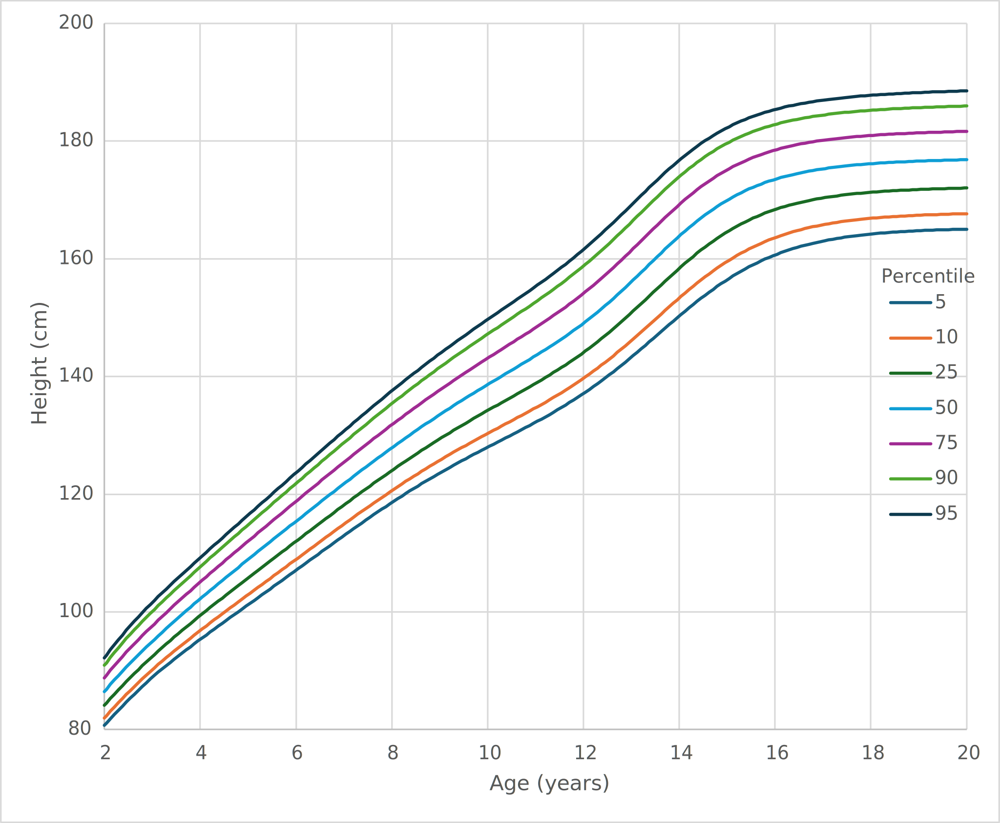
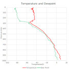
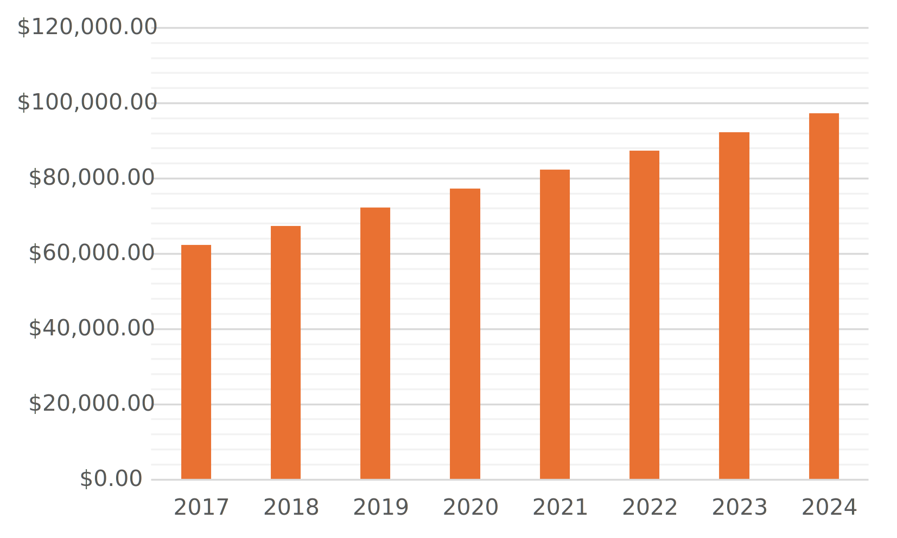
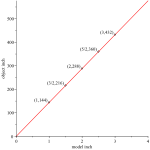
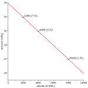

Interpret data in various formats and analyze mathematical models
Communicate results in mathematical notation and in language appropriate to the technical field
This section covers the following mathematical concepts.
Identify rates as linear, quadratic, exponential, or other (critical thinking)
Identify data varying directly or indirectly (critical thinking)
We often represent numerical data using tables, diagrams, and graphs. These include various kinds of charts like bar graphs and pie charts, and graphs of functions. We do this to make certain traits of the data easier to notice. Here we will look at how some of these are produced and begin to learn to recognize differences due to rates. More details about rates will be covered in Section3.3.
Subsection3.2.1Reading Tables of Data
This section illustrates how some data can be stored in tables, how to read data from a table, and how to infer additional data when reasonable.
Tables are useful if we have a limited number of entries, and the data can be organized by two traits. If there are too many entries, the table may be too large to efficiently use. The two traits become headers for the rows and columns. If the table has more entries than we can see on a page or screen, it becomes less easy to use. Technology can make it easier to find the desired row and column such as a spreadsheet with the row and column headings frozen.
Table3.2.1.Stall speed at 2550 lbs, most rearward center of gravity, speeds KIAS
Angle of Bank
Flap Setting
0
30
45
60
Up
48
52
57
68
Approach
43
46
51
61
Landing
40
43
48
57
We do not need to understand what bank, flap, and stall speed mean to read this table. Indeed a table can be presented precisely to help explain what terms mean. However, to satisfy your curiosity, stall speed refers to the speed at which a wing will produce insufficient lift to keep a plane flying. Falling beneath this speed typically results in the plane lowering its nose to regain speed. Angle of bank refers to how steeply the plane is tipped (left or right) in order to turn. KIAS stands for knots indicated air speed. Indicated airspeed is a speed pilots can see (think speedometer). Flaps are a structure extended for landing and sometimes take-off. Up means they are not in use. Approach and landing refer to varying degrees of extension.
Example3.2.2.
What is the stall speed in a 30 bank angle with flaps up?
We can determine this by looking for the column labeled 30 and the row labeled Up. In that cell is the number 52. Thus the stall speed at that bank angle with flaps up is 52 KIAS.
Example3.2.3.
In what condition is the stall speed the highest?
If we read all three rows, the largest number we find is 68. That is in the Up row and 60 column. So the stall speed is highest in the steep, 60 turn with the flaps in the up position.
Note, there is no shortcut here for checking the entry in every row and column.
Example3.2.4.
As the angle of bank increases (from 0 to 60) what happens to the stall speed?
Solution.
If we look in the Up row, the stall speed changes from 48 to 52 to 57 to 68. The first thing we notice is that the stall speed increases.
If we repeat this in the Approach row, we again see the speeds are increasing. The same is true in the Landing row.
Thus we can say that stall speed increases as the angle of bank increases.
In later sections (Section3.3 ) we will learn to be more specific about patterns when possible.
Checkpoint3.2.5.
Sometimes we want to know data that is between entries in a table. We can estimate these values if we know or can safely assume some property about the data. This is called interpolation. Below we provide examples of interpolation for linear data. Linear data is described in Section3.1 and Section3.3.
Example3.2.6.Interpolation in a Table.
What is the stall speed in a 15 bank angle with flaps in the Approach setting?
First, we note that there is no column for 15 bank angle. However we have 0 and 30. 15 is half way between these two. For this chart it is reasonable to estimate our desired stall speed by calculating the number half way between those in the table.
The two stall speeds are 43 and 46. The number in between (the average) is \((43+46)/2=44.5\text{.}\) Airspeed is reported only to units, so we must round to units. For stall speeds, it is safest to assume a higher stall speed, so we will round to 45 KIAS.
When we want a value that is half way between two entries in a table, we can simply average them. However, if we want a value somewhere other than half way in between we must perform an additional calculation.
Example3.2.7.
What is the stall speed with 10 bank angle with flaps in the Up setting?
The nearest entries in the table are 0 and 30. We want to measure how far 10 is from the left (0); we can calculate that as a percent of the distance from 0 to 30. We can use the percent to calculate the matching number between the table entries (48 and 52).
Because there are only 4 knots between the entries, it hardly seems worthwhile to do this work, especially because we round up for safety. There are times however, when this process is useful.
Checkpoint3.2.8.
Subsection3.2.2Reading Graphs
This section illustrates how some data can be represented in graphs and how to read data from a graph, including some comparisons of graphs.
Graphs that are curves (like lines) are read by finding a vertical heading that matches our question (think row) and reading the corresponding horizontal heading (think column). Note this could be reversed, that is, find a horizontal heading that matches and read the corresponding vertical one.
Example3.2.9.
Figure3.2.10 presents the maximum engine out glide for an airplane. If that plane is 2400 ft above the ground, how many nautical miles (nm) can it glide forward?
First we note that 2400 ft matches the vertical axis. We want to find the line across the graph that represents 2400 ft. We notice that no line is labeled 2400. We do have 2000 and 4000 and there are lines between them. To figure out which of these lines we should use, we must figure out how many feet each minor line represents.
We count 10 minor lines between each major line. Because each major line represents 2000 ft, we know the minor lines represent \(2000/10=200\) ft.
Because \(2400=2000+2(200)\) we want the second minor line above 2000. We follow that to the blue line, then we follow the gray (minor) line down to the bottom. Our result is two minor lines before 4.
We must figure out how much each minor vertical line represents. Each vertical major line is 2 nm. Again there are 10 minor lines between each major line, so we know the minor lines represent \(2/10=0.2\) nm.
The glide distance for 2400 ft is therefore \(4-2(0.2)=3.6\) nm. We subtracted here because it is before 4.
The horizontal axis is labeled Glide Distance and ranges from 0 to 20 nautical miles. The vertical axis is labeled Height Above Ground and ranges from 0 to 12000 feet. The graph is a line from (0,0) to (19.8,12000).
Figure3.2.10.Graph Representing Maximum Engine Out Glide
Checkpoint3.2.11.
When we look at any table, graph, or figure, we should ask ourselves why various choices were made in the construction of the table, graph, or figure. We may need to ask someone with related knowledge for explanations of those decisions.
Example3.2.12.
Consider Figure3.2.10. The input we use is Height Above Ground (ft). Frequently we place the inputs on the x-axis. Why was the y-axis chosen for the inputs here?
Consider that the inputs are heights. This is a y-axis concept, so it matches our expectations. Reading the graph is not affected by this choice.
Why do the inputs begin at 0 and end at 12000?
They begin at 0, because we are talking about a plane gliding to the ground. A plane must be above the ground (above 0) to glide.
They end at 12000 in this case, because this aircraft cannot fly higher than that altitude. We do not need data for cases that cannot occur.
Why are the inputs labeled every 2000 and the inputs every 2?
This is purely space available. If we put in more labels, the text for them would overlap.
Graphs can be from raw data which may appear random. We still read these graphs the same way.
For the following example we need to define a percentile. A percentile indicates a level such that, that percent of cases is less. For example if the 75th percentile is 88, means that 75% of the cases are less than 88. It is a way of indicating how much of a population is included at that level.

The horizontal axis is labeled Age and ranges from 2 to 20 years. The vertical axis is labeled Height and ranges from 80 to 200 centimeters. The graphs represent the percentiles: 5, 10, 25, 50, 75, 90, 95.
Figure3.2.13.Expected Stature of Males from 2 to 20 Years
Example3.2.14.
The figure above contains the stature (height) percentiles for U.S. males. The data can be obtained at cdc.gov/growthcharts/. What height in centimeters is the 50th percentile for 11 year old males?
Age is on the x-axis, so we start at 11 which should be half way between 10 and 12. To read an approximate value from this figure, we can draw a vertical line from here up to the middle (blue) curve. This is shown on the image below. From that point we can draw a horizontal line across to the y-axis. This line is about one quarter of the way between 140 and 160, so we estimate (interpolate) this is 145 cm (see Example3.2.7 for a reminder on how to estimate this).
The horizontal axis is labeled Age and ranges from 2 to 20 years. The vertical axis is labeled Height and ranges from 80 to 200 centimeters. The graphs represent the percentiles: 5, 10, 25, 50, 75, 90, 95.
A vertical line goes up from 11 years to the 50 percentile curve. From that point a horizontal line goes over to the vertical axis a little above 140 cm.
How much greater is the spread (distance from 5th to 95th percentile) for 20 year olds than for 2 year olds? Present as a ratio and as a percent increase.
For 2 year olds it appears to range from 80 to 95 cm (about 3/4 of the way up). This is a spread of \(95-80=15\) cm. For 20 year olds it appears to range from 165 to 190 cm. This is a spread of \(190-165=35\) cm. Thus the spread increases over time. The ratio is \(35/15 = 7/3 \approx 2.3\text{.}\) For the percent increase we calculate \(\frac{35}{15} \approx 2.33333333\) The percent increase is \(2.33333333-1.00000000=1.33333333\) or 133% increase. Yes, the increase is greater than 100% in this case, that is, the spread more than doubled.
In addition to reading specific values from these graphs, we should always ask ourselves why the diagram was designed as it was.
Example3.2.15.
When we look at the stature percentiles figure we should ask ourselves questions like the following.
Why is it for males only? The CDC provides separate data for females. On average females in the U.S. are shorter than males. Thus separate figures are needed. Note, to answer this we needed to see rest of the CDC data (cannot be read from the figure above).
Why does it begin at 2 years? The CDC provides separate data for 0-2 years. This is from the WHO rather than the CDC. An explanation is on the CDC website.
Why does the data end at 20 years? Notice that the percentile curves level off toward 20 years old. This simply represents that full, adult height has been reached. The curves should remain the same until age brings shrinking.
Example3.2.16.
Figure3.2.17 has the temperature and dewpoint read by a radiosonde (instruments on weather balloon) as it rose in the atmosphere. Note the vertical axis is the pressure reading. This is not the same as altitude, but it does correspond mostly to altitude. Dew point is the temperature at which water will condense, so it is also a temperature.
What are the temperature and dewpoint at the 700 millibar level?
We follow the 700 mb line over to the dewpoint (green, dashed) line then move straight down to the x-axis (temperature). This is a little less than halfway between -20 C and 0 (closer to 0). We estimate -7 C. For temperature we continue across the 700 mb line to the temperature (red, solid) line then move straight down to the x-axis. We notice it is a little closer to 0 than the dewpoint. We estimate the temperature is 5 C.

The horizontal axis is labeled Temperature and ranges from -100 to 20 degrees centigrade. The vertical axis is labeled pressure altitude and ranges from 1000 at the bottom to 0 at the top. There are two curves. One represents the temperature at that pressure and the other represents the dew point at that pressure.
Figure3.2.17.Graph of Temperature and Dewpoint
Note some charts like Figure3.2.17 are not meant to convey specific numbers but rather to show trends.
Example3.2.18.
Notice that while the temperature (red, solid line) wiggles around, it trends down (to the left) as the pressure decreases (go up the graph). That is, it shows temperature generally decreasing as altitude increases. We expect this, because it is farther from the ground which heats the air. The increase above 300 millibars level is the result of other factors which you can research at noaa.gov/jetstream/atmosphere/layers-of-atmosphere.
Clouds form when the temperature reaches the dewpoint and the air is saturated (has enough moisture). We see in Figure3.2.17 three places where temperature and dewpoint are the same. The lowest is between 800 and 700 millibars (we estimate 750 millibars). The second is between 700 and 600 millibars (we estimate 650 millibars). The third is at about 500 millibars. We would expect clouds to form at these altitudes.
Example3.2.19.
Consider Figure3.2.17. The input we use is Pressure (millibars). Why was the y-axis chosen for the inputs here?
The pressure readings correspond to altitudes (height) which we tend to think of as up. Putting this on the y-axis matches this expectation.
Why do the y-axis labels decrease as they go up?
Atmospheric pressure decreases with altitude, so low pressure means higher altitude. The pressure readings are arranged to be low altitude at the bottom and high altitude at the top.
Why do the inputs begin at 1000?
Because the pressure readings correspond to altitude the highest pressure should be on the ground. It turns out 1013 is a typical pressure at ground level, so much higher pressure readings are not expected.
Why are the output labels from -100 to 40?
These are based on commonly experienced temperatures. Temperatures lower than -100 C are not expected. Temperatures above 40 C do occur, but not in the location where this sounding was taken.
Use Example3.1.8 to convert 50 C to Fahrenheit to see why this temperature is uncommon in most locations.
The input for the glide ratio questions is altitude. Altitudes are continuous that is it makes sense to refer to an altitude of 2453.27 feet (fractional feet). Similarly the pressure levels are continuous, that is it makes sense to refer to 501.7 millibar level. However, there is data where a fraction does not make sense. This discrete data is often graphed differently. The next examples illustrate a way of presenting discrete data.
Example3.2.20.Increasing Income.
When Vasya was hired in 2017, she was paid an annual salary of $62,347.23. Her work has been good, so each year she has received raises of $5000.00.
To represent this data we first need to calculate her salary for each year. We do this by starting with her initial salary, then for each year adding the $5000 raise to the previous years salary. This is an iterative process. Table3.2.21 contains the results. A table is an effective means to represent discrete data like this.
We will represent her salary over time using the bar graph in Figure3.2.22. Notice the horizontal axis is labeled with years and the vertical axis is labeled in dollars. There is one bar for each year, because her salary was changed only once each year. Bar graphs are a good option for discrete data.
Consider the bar graph (ignore the table). Can you tell that Vasyas salary is increasing? Can you tell how much? How might you change the graph to make it easier to answer these questions?
Table3.2.21.Vasyas Salary
2017
$62,347.23
2018
$67,347.23
2019
$72,347.23
2020
$77,347.23
2021
$82,347.23
2022
$87,347.23
2023
$92,347.23
2024
$97,347.23

Figure3.2.22.Vasyas Salary
Example3.2.23.
Vasya wishes to know how her raises are helping her keep up with increasing costs. Figure3.2.24 shows her raises as a percent of her previous years salary and the inflation rate (usinflationcalculator.com/inflation/current-inflation-rates/) If her raises are at least as large as inflation, then her spending power is not diminished.
(a)
Using Table3.2.21 confirm that the graph shows the correct percent increase for 2021. Recall her raise is $5000 each year. The graph shows the percent increase for each years salary relative to the previous years salary.
(b)
For these years is she keeping up with inflation?
Solution.
Her raise is a larger percent each year except for two. In those two years it is close. She has been more than keeping up with inflation.
(c)
What trend do you notice in the percent increase of salary? Why is this happening?
Solution.
Her percent drops from about 8% to a little over 5%. This results from her raise being the same amount but her previous years salary is bigger each year. In the percent (part/whole) the part is remaining fixed while the whole is increasing.
Unless there is a change this will lead to her raises eventually not keeping up with inflation.
Figure3.2.24.Vasyas Salary
Table3.2.25.Inflation Rates by Year
2017
2.10%
2018
1.90%
2019
2.30%
2020
1.40%
2021
7.00%
2022
6.50%
2023
3.40%
2024
2.50%
Checkpoint3.2.26.
Consider Figure3.2.27. It contains Guidos annual salary for each year listed. The second bar is the first years salary increased each year to match inflation. That is it shows what Guidos salary would have been if his raises had exactly matched inflation.
(a)
In which years did Guido receive a raise?
(b)
In which years did Guidos salary appear to grow at least as much as inflation?
Figure3.2.27.Salary vs Inflation
Subsection3.2.3Using Graphs to Analyze Models
Above we practiced interpreting graphs provided for us. This section presents generating graphs to analyze and interpret models. While we will rely on technology to produce graphs, these examples begin with manual generation of graphs because that process helps us understand a model and it helps us understand what the graphs mean.
Example3.2.28.Scale Model.
Recall the scale model of a space shuttle in Example2.4.3 which is labeled as 1:144. We calculated that a model part which is 1.72 inches represents an actual part that is \(1.72 \cdot 144 = 247.68\) inches. In general \(A = 144M\) where \(M\) is the size on the model and \(A\) is the size on the actual shuttle.
To represent this scale conversion as a graph we will generate a table like Table3.2.21 then we will use that to plot the graph.
Model
Full Size
1.0
144
1.5
216
2.0
288
2.5
360
3.0
432
We sketch a graph by plotting the points first. Notice the five points based on the table above. Through the points we draw a curve: in this case it is a line. The graph is in Figure3.2.29.
For the curious, software uses this same process to produce a graph. It usually plots a much larger number of points and then connects the dots with short line segments.

Figure3.2.29.Graph of Scale
Example3.2.30.
Why does the graph start at 0? The inputs are lengths on the model; negative lengths do not make sense.
Why does it end at 4? If we wanted all sizes from zero to the largest dimension of the shuttle, we would need a bigger graph. However, because this is a line, we have a good idea what the rest of the graph looks like.
This graph is a line. We knew it would be because \(A = 144M\) is in the form of a line (as shown in Subsection3.1.1).
The next example is a shape we have not yet encountered in this text.
Example3.2.31.Ohms Law.
Recall Ohms Law \(V = IR\) from Model1.3.1. We will explore the relationship between current (\(I\)) and resistance (\(R\)).
To begin the exploration and to enable graphing we will complete a table. First it will be convenient to solve Ohms law for current (\(I\)).
\begin{align*}
V & = IR.\\
V \cdot \frac{1}{R} & = IR \cdot \frac{1}{R}.\\
\frac{V}{R} & = I.
\end{align*}
Because we are interested in the effect of resistance on current we will pick a fixed voltage: \(V=12\) V. Thus our equation is \(I = \frac{12}{R}\text{.}\)
Resistance
Current
1.0
12
4.0
3.0
8.0
1.5
12.0
1.0
16.0
0.75
We can plot these points and sketch a curve through them. This graph is in Figure3.2.32.
The apparent relationship between current and resistance for a fixed voltage is that current decreases as resistance increase.
The graph starts with 1 Ohm. Why does it not start at 0? If resistance were 0, then the equation becomes \(I=\frac{12}{0}\text{.}\) Division by zero does not make arithmetic sense. 0 ohm resistance means no resistance and this is not physically possible (nothing is perfect). Thus the math model fits the physical reality.
Figure3.2.32.Graph of Ohms Law
Checkpoint3.2.33.
The ideal gas law expresses a relationship between pressure, volume, and temperature of a gas. It is given by
\begin{equation*}
P \cdot V = k \cdot T
\end{equation*}
where \(P\) is the pressure, \(V\) is the volume, \(T\) is the temperature, and \(k\) is a constant dependent on the specific gas.
(a)
Draw a graph for the equation \(P = \frac{8.3145 T}{2.0000}\text{.}\) Note the units are Kelvin (Celsius + 273.15) for temperature and Jules/litre for pressure. These do not need to be labeled here.
(b)
Draw a graph for the equation \(P = \frac{8.3145 \cdot 293.15}{V}\text{.}\)
Subsection3.2.4Graphing Lines
We have seen what linear data looks like in data tables, discrete graphs (e.g., bar graph), and continuous graphs. This section presents how to graph lines when we have the equation, and presents analyzing linear models based on their graphs.
As described in Subsection3.1.1 a linear equation (model) has two parts: the shift \(+b\) and the ratio (slope, rate) \(m\text{.}\) First, we address the role of the ratio in the graph.
Definition3.2.34.Slope.
The rate of change of a line (graph) is called its slope. The numerator is the change in y and the denominator is the change in x. Slope can be calculated as
Rise and run are terms to help us remember the formula.
In Example2.4.3 we graphed a linear equation with the ratio 144 real inches to 1 model inch. In the linear model we have \(m=\frac{144}{1}\) that is 144 is the change in y (real inches) and and 1 is the change in x (model inches).
Because the rate of change is the fixed, the slope can be calculated from any two points. We can calculate the slope from points in a table or points from a graph using
As expected this is the same slope, because on a line the rate of change (slope) is constant.
To write the equation for a line we need the shift, \(+b\text{,}\) as well as the slope. This can also be read from the graph. The slope determines how tilted the line is. After this that line can be moved up or down. \(b\) controls this shift. It is typically easiest to read this shift at \(x=0\text{,}\) because in the linear form \(y=b+mx\) we have \(y=b+ m \cdot 0 = b\text{.}\) The shift then is the \(y\) coordinate at \(x=0\) which is why it is often called the y-intercept.

The horizontal axis is labeled altitude in feet mean sea level and ranges from 0 to 10000. The vertical axis is labeled pressure in inches of mercury and ranges from 19 to 30.
Three points are shown are (2000,27.92), (4000,25.92) and (8000,21.92).
Figure3.2.36.Calculating Slope
Example3.2.37.Calculate Shift.
The graph in Figure3.2.36 is linear. We will calculate the shift.
Solution.
The shift can be read when \(x=0\text{.}\) That point is not labeled on the graph. However, we can calculate it using one of the points and the ratio.
We will use \((2000 \text{ ft},27.92 \text{ inHg})\) to calculate the pressure using a proportion. We want the point 2000 feet below this point, and pressure increases as we go down so we set up
Thus the pressure should increase by 2.00 inHg giving us \(P=27.92 \text{ inHg}+2.00 \text{ inHg}=29.92 \text{ inHg}\text{.}\) Thus the point is \((0.00 \text{ ft}, 29.92 \text{ inHg})\) and the shift is \(b=29.92 \text{ inHg}\text{.}\)
Combining this shift with the slope from the example above the model is